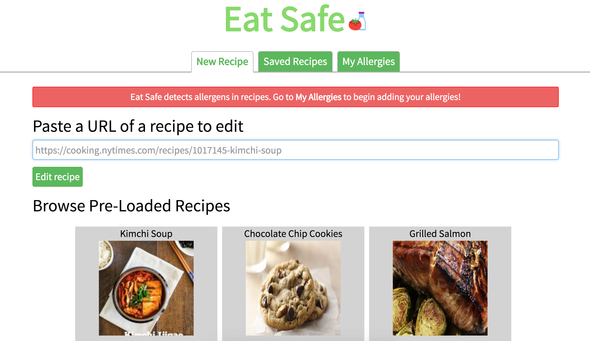

EatSafe Web app for 6.813 User Interface Design and Implementation (Spring 2017)
I worked on a team of 4 this spring in MIT's 6.813 User Interface Design and Implementation class to build EatSafe (live demo), a web app to help people with dietary restrictions such as food allergies detect and replace "dangerous" ingredients in recipes. The goal of this class and this project was to get practice designing an interface for usability, efficiency, and safety, and to incorporate good design principles and to practice iterative design and user testing. As such, there is no back end to this app, some state is stored in local storage, but much of the data is canned.
A user can specify their allergies/dietary restrictions.
Then, the user can search recipes and if a recipe contains an allergen, the recipe will highlight the allergen and offer the user suggested replacements and the user can edit the recipe.